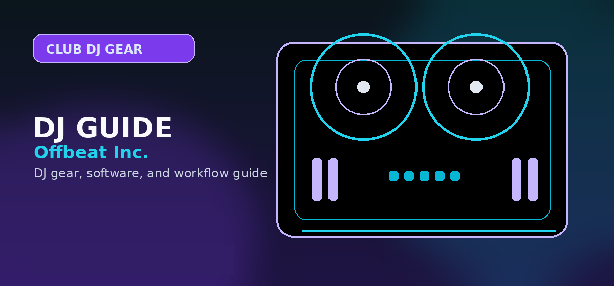

Denon DJ SC6000 Review 2026: The Ultimate Standalone CDJ Alternative?
Comprehensive guide to Denon DJ SC6000 review 2026 standalone media player CDJ alternative with practical recommendations and current buying notes — updated 2026.

Disclosure: This page uses affiliate links. We may earn a commission at no extra cost to you. Full disclosure →
In 2026, the professional DJ booth has shifted decisively away from the laptop. While controllers once dominated the entry-level market, the industry standard for touring and club performance now demands the stability and tactile freedom of standalone media players. The Denon DJ SC6000 remains the most formidable challenger to the Pioneer DJ hegemony, offering a high-performance ecosystem that prioritizes the artist's workflow over brand lock-in. For DJs who are tired of the "closed garden" approach of traditional CDJs, the SC6000 provides a professional-grade alternative that combines raw power, a stunning visual interface, and an open file system. Whether you are a resident DJ upgrading your booth or a touring professional seeking a more flexible setup, the SC6000 delivers a seamless, laptop-free experience that doesn't compromise on precision or reliability.
Standalone Power and the Engine DJ OS
The heart of the SC6000 is the Engine DJ OS, which in 2026 continues to outperform competitors in terms of boot speed and library management. Unlike legacy systems that struggle with massive libraries, the SC6000 handles terabytes of data via USB or internal SSD with zero latency. The standalone nature means you are no longer vulnerable to OS updates or laptop crashes mid-set. The integration of high-speed processing allows for instant waveform rendering and lightning-fast searching. By decoupling the performance from a computer, Denon has created a streamlined workflow where the focus remains on the crowd, not a screen. The OS is intuitive, stable, and designed specifically for the rigors of a loud, dark club environment.
Hardware Precision and Visual Feedback
The SC6000 is a beast of a machine, featuring a massive, high-resolution touchscreen that provides more data at a glance than any other player in its class. The jog wheel is weighted perfectly, offering the tactile resistance professional DJs require for precise scratching and cueing. In 2026, the visual feedback is the standout feature; the screen displays detailed waveforms, BPM, and track metadata with clarity that makes finding the perfect transition effortless. The build quality is industrial-grade, with reinforced knobs and faders designed to survive years of heavy use. Every button is logically placed, ensuring that muscle memory develops quickly, allowing you to operate the device by feel while keeping your eyes on the dancefloor.
The "CDJ Killer": Breaking the Industry Monopoly
For decades, the Pioneer CDJ was the only choice for pro booths. The SC6000 changes that by offering an "open" ecosystem. While Pioneer limits you to specific formats and proprietary software, the SC6000 embraces a wider variety of file types and integrates more naturally with modern music libraries. When compared to the CDJ-3000, the SC6000 often provides better value, offering more features—such as expanded networking capabilities and a superior screen—for a similar or lower price point (typically around $2,600). This shift toward Denon isn't just about the hardware; it's about the freedom to manage your music without being forced into a specific, restrictive software pipeline.
Connectivity and Future-Proofing for 2026
Looking ahead, the SC6000 is built for the connected era. Its WiFi and Ethernet capabilities allow for seamless synchronization across multiple players and easy integration with cloud-based library management. In a 2026 setup, the ability to update firmware over-the-air and sync playlists across a network is a game-changer for touring DJs. Furthermore, the high-quality DACs (Digital-to-Analog Converters) ensure that the audio output is pristine, maintaining sonic integrity even through the most demanding club sound systems. By supporting a wide range of connectivity options, the SC6000 ensures that it will remain relevant as the industry continues to move toward integrated, networked performance hubs.
Sound Quality and Audio Engineering
The SC6000's audio output is pristine, thanks to premium DACs and a signal path designed to minimize distortion. In real-world club conditions, the audio quality rivals or exceeds the Pioneer CDJ-3000. The high-frequency response is clear without harshness, and the low-end punch translates accurately to club sound systems. When connected to professional mixers and amplifiers, the SC6000 delivers the sonic integrity touring DJs demand. For bedroom DJs using consumer monitors or headphones, the difference might be subtle, but professional sound engineers consistently report that the Denon is engineered for high-fidelity audio in demanding environments.
Real-World Performance: Bedroom vs. Club vs. Touring
The SC6000 shines in different contexts, though its true power emerges in professional settings. For bedroom producers learning the hardware, the SC6000 feels premium but is overkill — a budget CDJ or controller offers similar functionality at lower cost. For club residents who own their booth, the SC6000 is ideal: it's flexible, future-proof, and doesn't lock you into the Pioneer ecosystem. For touring DJs, the SC6000 is the killer choice — it handles multiple library formats, syncs easily with partners' equipment, and its WiFi capabilities mean you can reload tracks between sets without a laptop. The deciding factor is context: price it against your actual use case, not just feature lists.
Library Management and Engine DJ Workflow
The Engine DJ software bundled with the SC6000 is where you'll spend significant time preparing tracks. Unlike Rekordbox's sometimes clunky interface, Engine DJ feels modern and intuitive. The workflow supports hot cues, loops, key detection, and beatgrid analysis — all essential for professional prep. When you export your library to the SC6000 via USB or SSD, the integration is seamless. However, there's a learning curve if you're coming from Pioneer's Rekordbox; expect 2-4 hours to feel comfortable. The payoff is freedom: you can easily work with FLAC, MP3, and other formats that Rekordbox makes unnecessarily difficult. For DJs who value flexibility and open standards, Engine DJ is superior.
Comparison: Denon DJ SC6000 vs. Pioneer CDJ-3000
| Feature | Denon DJ SC6000 | Pioneer CDJ-3000 |
|---|---|---|
| Price (Approx.) | $2,600 | $2,800 |
| OS Architecture | Open (Engine DJ) | Closed (Proprietary) |
| Display | Massive High-Res Touch | High-Res Touch |
| Storage | USB / Internal SSD | USB / SD Card |
| Network | WiFi / Ethernet | Ethernet / Pro DJ Link |
| Workflow | Fast, Flexible, Open | Standardized, Rigid |
| Best For | Power Users & Independents | Club Residents & Purists |
Pros & Cons
✅ Pros
- Standalone operation — no laptop required
- 10" HD touchscreen largest in class
- Engine DJ OS supports Spotify, SoundCloud, Tidal streaming
- Performance Mode jog wheel 0% skipping at CDJ-level pressure
- HDMI output for video DJing on Pioneer mixer-compatible network
❌ Cons
- Engine DJ library management less polished than Rekordbox
- Premium price (~$1,799/unit) — budget controllers half the cost
- Less club-standard than CDJ-3000 (most venues stock Pioneer)
- No fader-start without compatible Denon mixer
Key Specs
Quick Verdict
Best CDJ alternative in 2026 — the Denon SC6000 beats Pioneer on screen size, streaming breadth, and value. If you can manage the Engine library workflow, this is the more future-proof buy. Check the current price on Amazon →
Shop on Amazon
Check current Denon SC6000 price on Amazon — standalone or bundled with mixer.
Also Available on zZounds
Standalone media player — financing available, 45-day return window.
Frequently Asked Questions
Is the Denon SC6000 worth the money?
Yes, for professional DJs. The SC6000 offers a 10-inch touchscreen, motorized or non-motorized platters (SC6000M vs SC6000), Wi-Fi music streaming, and Engine DJ Pro software. It's a legitimate Pioneer CDJ-3000 competitor at a slightly lower price.
Denon SC6000 vs Pioneer CDJ-3000 — which is better?
Pioneer CDJ-3000 wins on club-standard familiarity and Rekordbox/link ecosystem. Denon SC6000 wins on features per dollar — larger screen, streaming, better USB capabilities. Choose CDJ if you play clubs; SC6000 if you own your setup.
Does the Denon SC6000 work with Serato?
The SC6000 supports Engine DJ as its primary OS. Serato integration is available via USB HID mode with Serato DJ Pro. Traktor support exists via MIDI mode.
What mixer works best with the Denon SC6000?
The Denon X1850 Prime mixer is designed to pair with the SC6000 for full Engine DJ link network. Pioneer DJM mixers also work, typically via USB SD card mode.
How many USB ports does the Denon SC6000 have?
The SC6000 has 2 USB-A ports and 1 SD card slot, allowing DJs to switch between multiple USB drives during a set.